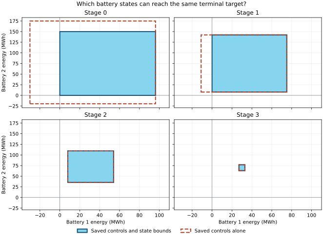

Backward reachable sets with saved constraints
Which states can reach the same target when the controls and trajectories must satisfy the catalogue’s saved constraints? Compare three nominal profiles on 35 models, with the current state free at each stage.

Define the feasible suffix
At stage k, seek a state xk and controls uk, …, u2 that satisfy the remaining affine dynamics and put x3 in the target. Each profile keeps the same dynamics, stage grid, fixed external forecast and authored target. With a fixed forecast, each support query maximizes dTP xk over that feasible suffix, where P selects the recorded coordinate pair.
- Authored controls. Allow [−1, 1] in each control coordinate.
- Saved controls. Replace the authored box with the saved control intervals.
- Full saved domain. Keep those same controls and add the saved state bounds, coupled stage and terminal rows, and positive-part budgets.
The third profile is contained in the second. Comparing them isolates the retained constraints. The first profile sets a different control box. The captures include 29 source-continuous models, three continuous relaxations, and three authored continuous domains.
Read the battery example
At stage zero, the control-only rectangle is [−30, 96.156] × [−19.8, 174.83] MWh. Adding the state bounds gives [0, 96.156] × [0, 150] MWh. The maximum total stored energy in direction (1, 1) decreases by 24.83 MWh. At stage three both profiles give [27, 33] × [63, 77] MWh. These rectangle values follow from the decoupled dynamics and are rounded for display.
Check the 3,360 queries
| Profile | Finite support | Unbounded | Empty set |
|---|---|---|---|
| Authored controls | 1,120 | 0 | 0 |
| Saved controls | 1,072 | 48 | 0 |
| Full saved domain | 1,024 | 0 | 96 |
Eight directions are sampled at each of four stages. In the full domain, models 1, 9 and 12 have empty sets at every stage because their terminal state bounds exclude the target. In the other models, adding the saved rows lowered 105 sampled supports across ten models at the numerical comparison tolerance of 10−7.
The original HiGHS replay refused 216 coefficient-sensitive queries. Reversible row scaling recovered 72. The optional Ipopt replay recovered another 134 and withheld optimality on ten building queries. A rational witness and matching upper bound resolve all ten, alongside 22 other exact building stage-direction checks. The raw records retain each solver outcome. Exact control-interval rays also contradict 30 infeasibility reports from the presolved condensed comparison. Disabling presolve gives unboundedness for those directions.
The independent checker tests the returned histories against the original dynamics and domain. The largest scaled support difference from the reference is below 7.90 × 10−9. The general full-domain comparisons are numerical. The building proofs, interval-only values and rays, and three terminal conflicts are exact for these fixtures. The results describe nominal feasible suffixes and sampled directions.
Replay the calculations
The offline download on the gallery card contains this lesson, the two checksum-pinned source captures, the native and exact producers, and their audits. Open the replay instructions before extracting it. The machine-readable summary records the initial numerical attempts. The manifest binds the published figure, lesson and replay contents.